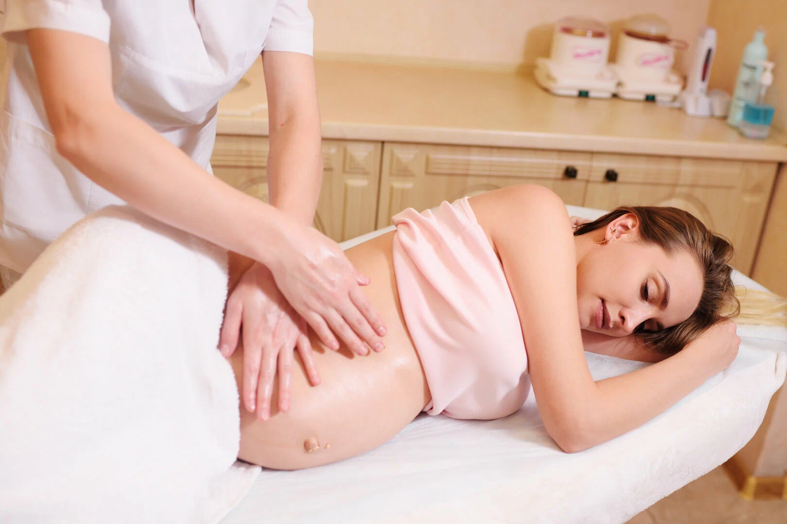

Our Services
Social media
Pregnancy Massage
At Wu Spa, we understand the unique physical and emotional needs of expectant mothers. Our Pregnancy Massage services in Charlotte NC and Newell, NC are designed to provide a safe, nurturing environment where you can find relief from the common discomforts of pregnancy. Our certified prenatal massage therapists use specialized techniques and positioning to ensure both you and your baby remain comfortable and safe throughout the session. Whether you're dealing with lower back pain, swelling, or just need a moment of tranquility, our pregnancy massage is the perfect way to support your body during this transformative time.

Specialized Care
-
Prenatal Relief: Targeted therapy for back pain, hip discomfort, and leg cramps common during pregnancy.
-
Edema Reduction: Specialized lymphatic drainage techniques to reduce swelling in the hands, feet, and ankles.
-
Stress Management: Gentle massage to lower cortisol levels and promote the release of feel-good hormones like serotonin.
-
Sciatic Nerve Relief: Effective pressure point work to alleviate nerve pain caused by the baby's position.
-
Postpartum Recovery: Gentle sessions designed to help the body realign and recover after delivery.
Benefits of Prenatal Massage
-
Reduces lower back and joint pain
-
Improves blood and lymph circulation
-
Reduces muscle tension and headaches
-
Promotes better sleep quality
-
Decreases stress and anxiety levels
-
Improves oxygenation of soft tissues and muscles
-
Supports emotional well-being
-
Prepares the body for a more comfortable labor
-
Balances hormonal changes
Safety & Comfort First
Your safety and the safety of your baby are our top priorities. During your pregnancy massage at Wu Spa, our experienced therapists in Charlotte NC and Newell, NC will perform a thorough consultation to understand your stage of pregnancy and any specific concerns. We use professional-grade prenatal pillows and cushions to allow you to rest comfortably, often in a side-lying position, which is safest for the later stages of pregnancy.
Our techniques are adapted to avoid certain pressure points and ensure a gentle yet effective treatment. We recommend consulting with your healthcare provider before starting prenatal massage, especially if you have a high-risk pregnancy or specific medical conditions. Our team is trained to work alongside your prenatal care plan to provide the most beneficial experience possible.
A typical session lasts 60 to 75 minutes, focusing on your specific areas of need. Many mothers find that regular sessions throughout their second and third trimesters significantly improve their physical comfort and mental clarity. After your massage, we'll provide hydration and self-care tips to help you maintain that relaxed feeling as you continue your pregnancy journey.